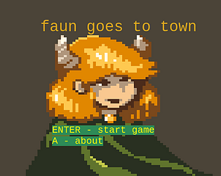

description
a faun goes to town to defeat a monster, but then??
cw: there is mentions of furries and also smexxing
controls
- arrow keys to move/ interact
- enter to progress dialogue
credits
- player character sprites and portrait (title screen) by ansimuz, taken from opengameart
- town tileset by beast taken from opengameart
- hometown by subspaceaudio from opengameart
- prairie nights by subspaceaudio from opengameart
- catacombs by subspaceaudio from opengameart
- fight for better future by nene from opengameart
reviews
- like it :D
- Im am so confused, about this game i understand the alter ego thing, but what is the game?!?!?!?
- Just played this! Really funny. I hope the faun can go to more towns.